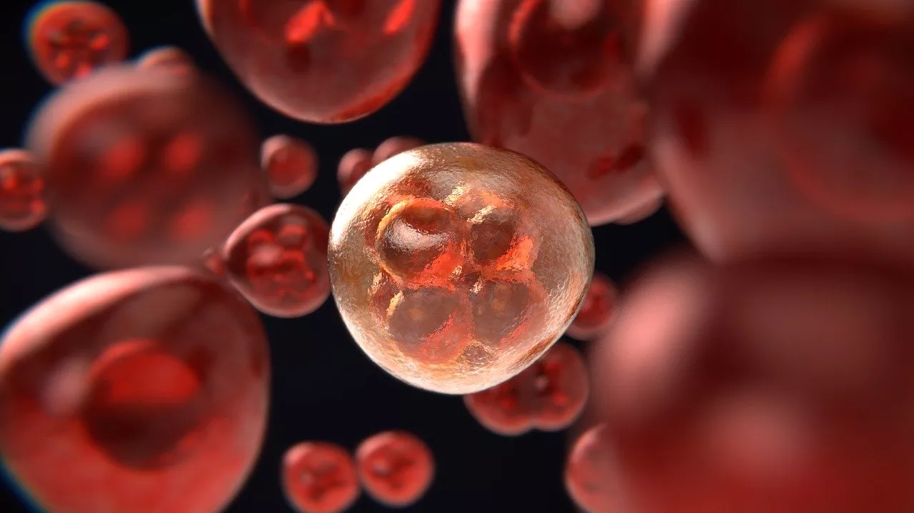

| Dupla | Nome |
|---|---|
| 1 | CAIO VINICIUS ARAUJO DE OLIVEIRA SALVIANO |
| 1 | MILENA BRANCO LABRE DE OLIVEIRA RODRIGUES |
| 2 | IGOR AUGUSTO DE FIGUEIREDO COSTA PEREIRA |
| 2 | PEDRO TRUPPEL DUARTE XAVIER |
| 3 | PEDRO LUCAS SIQUEIRA MARIA PERUSSE |
| 3 | RAMON TEIXEIRA DIAS MOREIRA |
| 4 | AGATHA DIAS ROQUE |
| 4 | VITOR EDUARDO BEZERRA FERREIRA |
| 5 | BRENO BORGES CESARIO DA CONCEICAO |
| 5 | FREDERICK CHAME DE MELLO CALDAS |
| 6 | GUSTAVO DE SANSON KOVACS |
| 6 | JOAO VICTOR OLIVEIRA HONORATO |
| 7 | CLARA DIAS HENZ |
| 7 | EDERSON MACEDO DE CARVALHO MORAES |
| 8 | FELIPE CEACERO RODRIGUES MAIA |
| 8 | LAURA TAVARES MONTEIRO |
12 ATIVIDADES AVALIATIVAS
12.1 DUPLAS
Para a realização das atividades nessa disciplina, serão consideradas as seguintes duplas:
O número alocado se refere à ordem de formação das duplas em sala.
12.2 ATIVIDADE AVALIATIVA 1: TESTES DE INDEPENDÊNCIA NA LITERATURA
Cada dupla ficará responsável por um artigo científico que utiliza testes de associação (Qui-quadrado e/ou Fisher): - O objetivo é apresentar o artigo, explicando o contexto, os métodos estatísticos e os resultados. - Tempo por apresentação: 10 a 12 minutos.
O sorteio do artigo para cada dupla foi realizado com o seguinte código:
Código
library(dplyr)
library(kableExtra)
set.seed(2026)
# Duplas
duplas <- paste0("Dupla ", 1:8)
# Artigos
artigos <- paste0("Artigo", 1:8)
# Embaralha e aloca
sorteio <- data.frame(
Dupla = duplas,
Artigo = sample(artigos, length(duplas))
)
# Cores para cada dupla
cores <- c("orange", "magenta", "green", "cyan", "brown", "pink", "lightblue", "lightgreen")
sorteio$Cor <- cores
# Cria a tabela HTML formatada
kbl(sorteio[,1:2], escape = FALSE) %>% # remove a coluna de cores da exibição
kable_styling(full_width = FALSE, bootstrap_options = c("striped", "hover")) %>%
row_spec(0, bold = TRUE) %>% # cabeçalho em negrito
{ # aplica cor de fundo linha a linha
tbl <- .
for(i in 1:nrow(sorteio)){
tbl <- tbl %>% row_spec(i, background = sorteio$Cor[i])
}
tbl
}| Dupla | Artigo |
|---|---|
| Dupla 1 | Artigo5 |
| Dupla 2 | Artigo1 |
| Dupla 3 | Artigo7 |
| Dupla 4 | Artigo8 |
| Dupla 5 | Artigo3 |
| Dupla 6 | Artigo4 |
| Dupla 7 | Artigo2 |
| Dupla 8 | Artigo6 |
Os arquivos em pdf de cada artigo encontram-se no nossoGoogle ClasSroom. Para a apresentação em slides considere os seguintes capítulos.
12.2.1 CAPÍTULO 1: INTRODUÇÃO
- Apresentar o título do artigo e autores do estudo.
- Explicar a motivação da pesquisa.
- Listar os objetivos do artigo.
- Explicar como a amostra foi coletada.
12.2.2 CAPÍTULO 2: METODOLOGIA ESTATÍSTICA
- Descrever as variáveis analisadas (desfecho e fatores de exposição).
- Explicar como os testes de associação foram aplicados e apresentados:
12.2.3 CAPÍTULO 3: RESULTADOS
- Apresentar tabelas com as associações.
- Interpretar os resultados de forma simples e direta.
12.2.4 CAPÍTULO 4: CONCLUSÃO
- Sintetizar principais achados.
- Destacar a importância do teste de associação na pesquisa.
- Qual a contribuição dessa pesquisa para a sociedade?
12.2.5 PUBLICAÇÃO COM GitHub Pages
Após finalizarem a apresentação em slides quarto, publiquem com o GitHub Pages usando o nome “Apresentacao1” e colem o link gerado no Google Classroom na atividade “Atividade Avaliativa 1”.
12.3 ATIVIDADE AVALIATIVA 2: APLICANDO O PACOTE gtsummary
Cada dupla ficará responsável por uma variável desfecho da base de dados de satisfação com servições de uma agencia de aviões (veja o capítulo 6) - O objetivo é apresentar uma tabela completa com as associações do desfecho com os fatores de exposição, explicando os resultados com detalhes e eventuais discussões. - Tempo por apresentação: 5 a 7 minutos.
O sorteio da variável de desfecho para cada dupla foi realizado com o seguinte código:
Código
library(dplyr)
library(kableExtra)
set.seed(2026)
# Duplas
duplas <- paste0("Dupla ", 1:8)
# Artigos
desfechos <- c("Embarque_Desembarque", "Local_Portao",
"Servico_Online", "Servico_Bordo",
"Conforto_Assento", "Entretenimento_Voo",
"Checkin_service", "Limpeza")
# Embaralha e aloca
sorteio <- data.frame(
Dupla = duplas,
Desfecho = sample(desfechos, length(duplas))
)
# Cores para cada dupla
cores <- c("orange", "magenta", "green", "cyan", "brown", "pink", "lightblue", "lightgreen")
sorteio$Cor <- cores
# Cria a tabela HTML formatada
kbl(sorteio[,1:2], escape = FALSE) %>% # remove a coluna de cores da exibição
kable_styling(full_width = FALSE, bootstrap_options = c("striped", "hover")) %>%
row_spec(0, bold = TRUE) %>% # cabeçalho em negrito
{ # aplica cor de fundo linha a linha
tbl <- .
for(i in 1:nrow(sorteio)){
tbl <- tbl %>% row_spec(i, background = sorteio$Cor[i])
}
tbl
}| Dupla | Desfecho |
|---|---|
| Dupla 1 | Conforto_Assento |
| Dupla 2 | Embarque_Desembarque |
| Dupla 3 | Checkin_service |
| Dupla 4 | Limpeza |
| Dupla 5 | Servico_Online |
| Dupla 6 | Servico_Bordo |
| Dupla 7 | Local_Portao |
| Dupla 8 | Entretenimento_Voo |
A base de dados DadosAviao.xlsx encontra-se no Google ClasSroom. Para a apresentação em slides considere os seguintes capítulos:
12.3.1 CAPÍTULO 1: Resultados
- Apresente a Tabela completa com as associações da variável desfecho com os fatores de exposição.
- Essa Tabela deve conter todos os detalhes apresentados no capítulo 6 desse material.
- Escreva brevemente os achados dessa tabela.
- Será cobrado rigor metodológico na descrição e apresentação dos resultados.
12.3.2 CAPÍTULO 2: Conclusão
- Faça uma conclusão geral dos principais resultados.
12.3.3 PUBLICAÇÃO COM GitHub Pages
Após finalizarem a apresentação em slides quarto, publiquem com o GitHub Pages usando o nome “Apresentacao2” e colem o link gerado no Google Classroom na atividade “Atividade Avaliativa 2”.
12.4 ATIVIDADE AVALIATIVA 3: REVISÃO DE TESTES DE HIPÓTESE PARA 1, 2 OU MAIS DE 2 POPULAÇÕES
Nesta atividade avaliativa, será proposto um conjunto de 20 itens no formato verdadeiro ou falso, com o objetivo de verificar a compreensão dos estudantes sobre diagnósticos de normalidade e testes estatísticos aplicados a diferentes contextos amostrais.
A atividade tem como principais objetivos:
- Avaliar a capacidade de interpretação de situações práticas envolvendo análise de dados;
- Verificar o entendimento sobre quando e como aplicar testes de normalidade;
- Identificar a compreensão dos estudantes sobre a escolha adequada de testes estatísticos para:
- uma população;
- duas populações;
- mais de duas populações.
Os itens serão apresentados em formato afirmativo, cabendo ao estudante classificá-los como verdadeiros ou falsos: * Os itens assinalados como verdadeiro não precisarão de justificativa. * Os itens assinalados como falsto precisarão de justificativa.
Esta atividade busca incentivar o raciocínio crítico e a autonomia na escolha de métodos estatísticos adequados, habilidades fundamentais na prática profissional em Estatística.
12.5 ATIVIDADE AVALIATIVA 4: TESTES DE HIPÓTESE PARA 1, 2 OU MAIS DE 2 POPULAÇÕES NA LITERATURA
Cada dupla ficará responsável por um artigo científico que utiliza testes paramétricos para 1, 2 ou mais de 2 populações: - O objetivo é apresentar o artigo, explicando o contexto, os métodos estatísticos e os resultados. - Tempo por apresentação: 10 a 12 minutos.
O sorteio do artigo para cada dupla foi realizado com o seguinte código:
Código
library(dplyr)
library(kableExtra)
set.seed(123)
# Duplas
duplas <- paste0("Dupla ", 1:8)
# Artigos
artigos <- paste0("Artigo", 1:8)
# Embaralha e aloca
sorteio <- data.frame(
Dupla = duplas,
Artigo = sample(artigos, length(duplas))
)
# Cores para cada dupla
cores <- c("orange", "magenta", "green", "cyan", "brown", "pink", "lightblue", "lightgreen")
sorteio$Cor <- cores
# Cria a tabela HTML formatada
kbl(sorteio[,1:2], escape = FALSE) %>% # remove a coluna de cores da exibição
kable_styling(full_width = FALSE, bootstrap_options = c("striped", "hover")) %>%
row_spec(0, bold = TRUE) %>% # cabeçalho em negrito
{ # aplica cor de fundo linha a linha
tbl <- .
for(i in 1:nrow(sorteio)){
tbl <- tbl %>% row_spec(i, background = sorteio$Cor[i])
}
tbl
}| Dupla | Artigo |
|---|---|
| Dupla 1 | Artigo7 |
| Dupla 2 | Artigo8 |
| Dupla 3 | Artigo3 |
| Dupla 4 | Artigo6 |
| Dupla 5 | Artigo2 |
| Dupla 6 | Artigo4 |
| Dupla 7 | Artigo5 |
| Dupla 8 | Artigo1 |
Os arquivos em pdf de cada artigo encontram-se no nossoGoogle ClasSroom. Para a apresentação em slides considere os seguintes capítulos.
12.5.1 CAPÍTULO 1: INTRODUÇÃO
- Apresentar o título do artigo e autores do estudo.
- Explicar a motivação da pesquisa.
- Listar os objetivos do artigo.
- Explicar como a amostra foi coletada.
12.5.2 CAPÍTULO 2: METODOLOGIA ESTATÍSTICA
- Descrever as variáveis analisadas (desfecho e fatores de exposição).
- Explicar como os testes foram aplicados e apresentados:
12.5.3 CAPÍTULO 3: RESULTADOS
- Apresentar tabelas com as associações.
- Interpretar os resultados de forma simples e direta.
12.5.4 CAPÍTULO 4: CONCLUSÃO
- Sintetizar principais achados.
- Destacar a importância dos testes de hipótese na pesquisa.
- Qual a contribuição dessa pesquisa para a sociedade?
12.5.5 PUBLICAÇÃO COM GitHub Pages
Após finalizarem a apresentação em slides quarto, publiquem com o GitHub Pages usando o nome “Apresentacao4” e colem o link gerado no Google Classroom na atividade “Atividade Avaliativa 4”.
12.6 ATIVIDADE AVALIATIVA 5: A ANOVA DE WELCH
Nesta atividade, vocês deverão explicar:
- Por que a ANOVA clássica pode falhar quando há variâncias diferentes entre grupos.
- Quais adaptações são feitas na ANOVA de Welch para corrigir esse problema.
- Do ponto de vista de comparações múltiplas, como o teste de Games–Howell adapta o teste de Tukey
- Qual a lógica estatística por trás dessas mudanças
Assim, na apresentação em slides, serão necessários os seguintes capítulos:
12.6.1 CONTEXTO
Explique brevemente:
- O que a ANOVA clássica testa.
- A fórmula da estatística de teste.
- Quais são suas suposições principais.
- Onde a suposição da homogeneidade é utilizada.
- O problema da heterogeneidade de variâncias.
- Apresente o teste de Tukey com as fórmulas.
12.6.2 A ANOVA DE WELCH
Explique conceitualmente:
- O que muda em relação à ANOVA clássica?
- Traga as fórmulas e expressões pertinentes.
12.6.3 O TESTE DE GAMES-HOWELL
Explique conceitualmente:
- O que muda em relação ao teste de Tukey.
- Traga as fórmulas e expressões pertinentes.
12.6.4 REFERÊNCIAS
Traga as referências utilizadas no seu trabalho.
12.7 PROJETO I

Como contexto aplicado para o desenvolvimento do Projeto I, consideram-se dados reais coletados por alunas do curso de pós-graduação em Nutrição da Universidade Federal Fluminense (UFF). O conjunto de dados reúne informações de 2310 indivíduos que responderam a um questionário online no ano de 2022, durante o período da pandemia. A base de dados está armazenada no arquivo Nutricao.xlsx e está disponível no Google Classroom.
As 28 variáveis coletadas abrangem diferentes dimensões relevantes para a análise, incluindo características sociodemográficas, aspectos relacionados à pandemia e mudanças nos hábitos alimentares. A Tabela a seguir apresenta a descrição detalhada dessas variáveis, seus significados e respectivas categorias ou unidades de medida.
| Variável | Significado | Categorias / Unidade |
|---|---|---|
| Variáveis Categóricas | ||
| Genero | Sexo do participante | Masculino; Feminino |
| Raca_cor | Raça/cor autodeclarada | Branca; Parda; Preta; Indígena; Amarela; Outro |
| Regiao | Região de residência | Sul; Sudeste; Norte; Centro-Oeste; Nordeste |
| Isolamento | Realizou isolamento social na pandemia | Sim; Não |
| Trabalha | Situação de trabalho | Sim; Não |
| Profissional_Saude | É profissional da saúde | Sim; Não |
| Renda_familiar | Faixa de renda familiar | Até R$1254; R$1255–R$8640; >R$8640 |
| Escolaridade | Nível de escolaridade | Fundamental; Médio; Superior; Pós-graduação; Analfabeto |
| Covid | Teve diagnóstico de COVID-19 | Sim; Não |
| Consulta_Nutricionista | Realizou consulta com nutricionista | Sim; Não |
| Dificuldade_Financeira | Relatou dificuldade financeira | Sim; Não |
| Acesso_Alimento | Teve dificuldade de acesso a alimentos | Sim; Não |
| Tempo_Preparo_Refeicao | Mudança no tempo de preparo das refeições | Aumentou; Diminuiu; Não alterou |
| cigarro | Hábito de fumar | Sim; Não |
| atividade_fisica_pandemia | Mudança na atividade física durante a pandemia | Aumentou; Diminuiu; Não alterou; Não tenho o hábito |
| Variáveis Contínuas | ||
| Idade | Idade do participante | Anos |
| Altura | Altura do participante | Metros |
| Peso | Peso do participante | Quilogramas |
| IMC | Índice de Massa Corporal | kg/m² |
| Questão Aberta | ||
| sentimentos_pandemia | Sentimentos relatados durante a pandemia | Resposta aberta (múltiplas categorias) |
| Variáveis Resposta | ||
| Delivery | Mudança no consumo de delivery | Aumentou; Diminuiu; Não alterou; Não tenho o hábito |
| Paes_Torradas_Biscoitos | Mudança no consumo de pães, torradas e biscoitos | Aumentou; Diminuiu; Não alterou; Não consumo |
| Leites_Derivados | Mudança no consumo de leites e derivados | Aumentou; Diminuiu; Não alterou; Não consumo |
| Ovos_Carnes | Mudança no consumo de ovos e carnes | Aumentou; Diminuiu; Não alterou; Não consumo |
| Doces | Mudança no consumo de doces | Aumentou; Diminuiu; Não alterou; Não consumo |
| Bebidas_Alcoolicas | Mudança no consumo de bebidas alcoólicas | Aumentou; Diminuiu; Não alterou; Não consumo |
| Refrigerante | Mudança no consumo de refrigerantes | Aumentou; Diminuiu; Não alterou; Não consumo |
| Embutidos | Mudança no consumo de embutidos | Aumentou; Diminuiu; Não alterou; Não consumo |
O presente estudo tem como objetivo principal investigar os fatores associados às mudanças nos hábitos alimentares reportadas pelos participantes durante o período da pandemia de COVID-19.
De forma mais específica, busca-se avaliar a existência de associações entre as variáveis resposta — que representam alterações em hábitos e consumo de diferentes grupos alimentares e um conjunto de variáveis explicativas de natureza sociodemográfica, econômica e comportamental, incluindo aspectos relacionados ao contexto da pandemia.
Adicionalmente, pretende-se:
- Identificar padrões de mudança no comportamento alimentar da população estudada;
- Avaliar o papel de fatores como renda, escolaridade, isolamento social e atividade física sobre tais mudanças;
- Explorar possíveis desigualdades no acesso à alimentação e seus impactos nos hábitos alimentares;
- Investigar a influência de aspectos emocionais relatados durante a pandemia sobre o consumo alimentar.
Por fim, o estudo visa fornecer evidências empíricas que contribuam para a compreensão dos efeitos da pandemia sobre o comportamento alimentar, podendo subsidiar estratégias de intervenção e políticas públicas na área de nutrição e saúde.
Para o desenvolvimento das atividades do projeto, cada estudante será responsável pela análise de uma variável resposta relacionada às mudanças nos hábitos alimentares.
A distribuição das variáveis será realizada por meio de um sorteio aleatório, respeitando os seguintes critérios:
- Cada uma das 8 variáveis resposta será atribuída a exatamente dois estudantes;
- Estudantes pertencentes à mesma dupla não poderão receber a mesma variável, garantindo diversidade de análises dentro de cada grupo;
- O processo de alocação será conduzido de forma reprodutível, assegurando transparência e imparcialidade na distribuição.
Essa estratégia permite que diferentes aspectos do comportamento alimentar sejam explorados de maneira equilibrada, ao mesmo tempo em que promove comparações entre análises conduzidas por diferentes estudantes.
De acordo com esses critérios, tem-se o seguinte sorteio:
Código
library(dplyr)
library(kableExtra)
set.seed(123)
# Base de alunos
dados <- tribble(
~Dupla, ~Nome,
1,"CAIO VINICIUS ARAUJO DE OLIVEIRA SALVIANO",
1,"MILENA BRANCO LABRE DE OLIVEIRA RODRIGUES",
2,"IGOR AUGUSTO DE FIGUEIREDO COSTA PEREIRA",
2,"PEDRO TRUPPEL DUARTE XAVIER",
3,"PEDRO LUCAS SIQUEIRA MARIA PERUSSE",
3,"RAMON TEIXEIRA DIAS MOREIRA",
4,"AGATHA DIAS ROQUE",
4,"VITOR EDUARDO BEZERRA FERREIRA",
5,"BRENO BORGES CESARIO DA CONCEICAO",
5,"FREDERICK CHAME DE MELLO CALDAS",
6,"GUSTAVO DE SANSON KOVACS",
6,"JOAO VICTOR OLIVEIRA HONORATO",
7,"CLARA DIAS HENZ",
7,"EDERSON MACEDO DE CARVALHO MORAES",
8,"FELIPE CEACERO RODRIGUES MAIA",
8,"LAURA TAVARES MONTEIRO"
)
# Variáveis resposta
variaveis <- c("Delivery","Paes_Torradas_Biscoitos","Leites_Derivados",
"Ovos_Carnes","Doces","Bebidas_Alcoolicas",
"Refrigerante","Embutidos")
# Repete cada variável duas vezes
vars_rep <- rep(variaveis, each = 2)
# Função para gerar sorteio válido
gerar_sorteio <- function(dados, vars_rep){
repeat{
sorteio <- dados %>%
mutate(Variavel = sample(vars_rep))
# verifica restrição: dupla não pode repetir variável
check <- sorteio %>%
group_by(Dupla) %>%
summarise(n = n_distinct(Variavel)) %>%
pull(n)
if(all(check == 2)){
return(sorteio)
}
}
}
# Executa sorteio
resultado <- gerar_sorteio(dados, vars_rep)
# Cores por dupla
cores <- c("orange", "magenta", "green", "cyan",
"brown", "pink", "lightblue", "lightgreen")
resultado$Cor <- cores[resultado$Dupla]
# Cria a tabela HTML formatada
kbl(resultado[,1:3], escape = FALSE,
col.names = c("Dupla","Nome","Variável Resposta"),
align = "c") %>%
kable_styling(full_width = FALSE,
bootstrap_options = c("striped", "hover")) %>%
row_spec(0, bold = TRUE) %>%
{
tbl <- .
for(i in 1:nrow(resultado)){
tbl <- tbl %>% row_spec(i, background = resultado$Cor[i])
}
tbl
}| Dupla | Nome | Variável Resposta |
|---|---|---|
| 1 | CAIO VINICIUS ARAUJO DE OLIVEIRA SALVIANO | Doces |
| 1 | MILENA BRANCO LABRE DE OLIVEIRA RODRIGUES | Bebidas_Alcoolicas |
| 2 | IGOR AUGUSTO DE FIGUEIREDO COSTA PEREIRA | Delivery |
| 2 | PEDRO TRUPPEL DUARTE XAVIER | Embutidos |
| 3 | PEDRO LUCAS SIQUEIRA MARIA PERUSSE | Leites_Derivados |
| 3 | RAMON TEIXEIRA DIAS MOREIRA | Paes_Torradas_Biscoitos |
| 4 | AGATHA DIAS ROQUE | Delivery |
| 4 | VITOR EDUARDO BEZERRA FERREIRA | Embutidos |
| 5 | BRENO BORGES CESARIO DA CONCEICAO | Paes_Torradas_Biscoitos |
| 5 | FREDERICK CHAME DE MELLO CALDAS | Doces |
| 6 | GUSTAVO DE SANSON KOVACS | Ovos_Carnes |
| 6 | JOAO VICTOR OLIVEIRA HONORATO | Refrigerante |
| 7 | CLARA DIAS HENZ | Ovos_Carnes |
| 7 | EDERSON MACEDO DE CARVALHO MORAES | Bebidas_Alcoolicas |
| 8 | FELIPE CEACERO RODRIGUES MAIA | Leites_Derivados |
| 8 | LAURA TAVARES MONTEIRO | Refrigerante |
12.8 ATIVIDADE AVALIATIVA 6: APRESENTAÇÃO EM SLIDES DO PROJETO I
Cada estudante deverá elaborar uma apresentação em slides completa, a partir da base de dados disponibilizada.
A partir da variável resposta sorteada, o estudante deverá investigar sua associação com as demais variáveis do banco de dados por meio de técnicas estatísticas apropriadas.
A apresentação em slides deverá conter os seguintes capítulos:
12.8.1 INTRODUÇÃO
Neste capítulo, o estudante deverá contextualizar o tema do estudo, abordando os impactos da pandemia de COVID-19 sobre aspectos sociais, econômicos e comportamentais, com ênfase nas possíveis mudanças nos hábitos alimentares da população.
Além disso, deve-se apresentar o problema de pesquisa, destacando a relevância de investigar fatores associados às mudanças na variável resposta associada. A variável resposta sorteada para o estudante deve ser explicitamente apresentada como foco central da análise.
Por fim, recomenda-se a formulação de um ou mais objetivos, sendo o principal deles avaliar a associação entre a variável resposta selecionada e as demais variáveis do banco de dados.
12.8.2 METODOLOGIA
Neste capítulo, o estudante deverá descrever, brevemente:
- A origem dos dados (questionário online aplicado em 2022);
- O tamanho da amostra (2310 indivíduos);
- A descrição geral das variáveis analisadas, com destaque para:
- A variável resposta (definida no sorteio);
- As variáveis explicativas (categóricas, contínuas e aberta).
Em seguida, deve-se detalhar os métodos estatísticos utilizados, destacando não apenas suas finalidades, mas também suas condições de aplicabilidade e principais suposições. O estudante deve indicar o nível de significância adotado (por exemplo, 5%) e mencionar pacotes do R utilizados nas análises.
Não precisa apresentar fórmulas das metodologias estatísticas. Apenas citar os procedimentos utilizados e por qual razão foram utilizados.
12.8.3 RESULTADOS
Neste capítulo, o estudante deverá apresentar os resultados das análises realizadas, de forma organizada e interpretativa.
Sugere-se:
- Apresentar uma tabela completa entre a variável resposta e cada variável qualitativa;
- Reportar nessa tabela:
- as frequências absolutas e em porcentagem (por linha) da combinação entre a variável resposta e cada variável qualitativa.
- qual teste foi utilizado e os resultados do teste (valor-p);
- apresentar o V de Cramér para quantificar a intensidade da associação;
- apresentar as caselas influentes de acordo com o resíduo padronizado.
- Apresentar uma tabela completa entre a variável resposta e cada variável quantitativa;
- Apresentar medidas resumo da variável quantitativa em cada categoria da variável resposta
- Apresentar resultados dos testes estatísticos apropriados;
- Incluir comparações múltiplas e seus resultados, quando pertinente;
- Apresentar a nuvem de palavras da variável
sentimentos_pandemiade acordo com as categorias da variável resposta.
Após as tabelas e nuvens de palavras, interprete, rapidamente, os principais resultados.
12.8.4 CONCLUSÃO
Neste capítulo, o estudante deverá:
- Retomar o objetivo do estudo;
- Sintetizar os principais achados, destacando quais variáveis apresentaram associação com a variável resposta;
- Discutir possíveis interpretações para os resultados encontrados;
A conclusão deve ser clara, objetiva e coerente com os resultados apresentados.
12.8.5 DICAS
- Evitar excesso de texto: priorizar tópicos curtos e objetivos;
- Utilizar elementos visuais (tabelas, e gráficos) para facilitar a interpretação;
- Garantir legibilidade (tamanho de fonte adequado, bom contraste de cores);
- Manter uma apresentação visual limpa e organizada.
12.9 ATIVIDADE AVALIATIVA 7: COMUNICAÇÃO DO PROJETO I
A apresentação será avaliada com base nos seguintes aspectos:
Clareza na comunicação: capacidade de explicar os objetivos, métodos e resultados de forma compreensível, utilizando uma linguagem adequada e evitando ambiguidades ou termos excessivamente técnicos sem explicação;
Organização da apresentação: estrutura lógica e coerente, com encadeamento adequado entre introdução, metodologia, resultados e conclusão, permitindo que seja possível acompanhar facilmente o raciocínio desenvolvido;
Domínio do conteúdo: compreensão dos métodos estatísticos utilizados, incluindo suas finalidades e limitações, bem como correta interpretação dos resultados;
Capacidade de síntese: habilidade de selecionar e apresentar apenas os resultados mais relevantes, evitando excesso de informações e focando nos principais achados do estudo;
Qualidade visual dos slides: uso adequado de elementos gráficos (tabelas, gráficos, destaques), boa legibilidade (tamanho de fonte, contraste de cores) e organização visual que favoreça a compreensão;
Interpretação crítica: capacidade de ir além da descrição dos resultados, apresentando interpretações coerentes, possíveis explicações para os achados e conexão com o contexto do problema;
Postura e apresentação oral: clareza na fala, objetividade, boa dicção, controle do tempo e segurança na exposição, demonstrando preparo e familiaridade com o conteúdo apresentado.
A avaliação considerará não apenas os resultados obtidos, mas principalmente a capacidade do estudante de interpretar, sintetizar e comunicar suas análises de forma clara, crítica e fundamentada, evidenciando compreensão dos métodos estatísticos e do contexto aplicado do estudo.
12.10 ATIVIDADE AVALIATIVA 8: TESTES DE INDEPENDÊNCIA, HOMOGENEIDADE E ADERÊNCIA
Nesta atividade avaliativa, será proposto um conjunto de 20 itens no formato verdadeiro ou falso, com o objetivo de verificar a compreensão dos estudantes sobre os testes qui-quadrado de independência, homogeneidade e aderência, bem como sua interpretação em diferentes contextos.
A atividade tem como principais objetivos:
- Avaliar a capacidade de interpretação de situações práticas envolvendo variáveis qualitativas;
- Verificar o entendimento sobre as diferenças entre os testes de:
- independência;
- homogeneidade;
- aderência;
- Identificar a compreensão dos estudantes sobre:
- formulação das hipóteses;
- interpretação de tabelas de contingência;
- condições de aplicação dos testes;
- interpretação do valor-p e da decisão estatística.
Os itens serão apresentados em formato afirmativo, cabendo ao estudante classificá-los como verdadeiros ou falsos: * Os itens assinalados como verdadeiros não precisarão de justificativa; * Os itens assinalados como falsos precisarão de justificativa.
12.11 ATIVIDADE AVALIATIVA 9: EXPLORANDO A NOVA VERSÃO DO PACOTE geobr
Nesta atividade, cada dupla ficará responsável por explorar e apresentar duas funções do pacote geobr, incluindo funções clássicas e funções recentemente incorporadas ao pacote.
O objetivo é desenvolver familiaridade com bases geográficas oficiais brasileiras, visualização espacial no R e interpretação de objetos espaciais.
12.11.1 OBJETIVOS DA ATIVIDADE
- Explorar funções do pacote
geobr; - Trabalhar com objetos espaciais no R;
- Investigar diferentes geometrias territoriais brasileiras;
- Produzir mapas simples e organizados;
- Desenvolver interpretação espacial;
- Aprender a consultar documentações técnicas.
12.11.2 O QUE CADA DUPLA DEVERÁ APRESENTAR
12.11.2.1 INTRODUÇÃO
Para cada função sorteada, apresentar:
- O que a base representa;
- Qual o objetivo da geometria;
- Possíveis aplicações práticas;
- Qual o órgão responsável pelos dados;
- Qual o nível territorial envolvido.
12.11.2.2 EXPLORAÇÃO DA FUNÇÃO
Investigar:
- Principais argumentos;
- Anos disponíveis;
- Tipo de geometria retornada;
- Estrutura do objeto espacial;
- Informações disponíveis nas colunas da base.
12.11.2.3 CONSTRUÇÃO DE MAPAS
Cada dupla deverá construir mapas contendo:
- As geometrias principais da função;
- Títulos e organização visual;
- Diferentes contornos e cores simples;
- Sobreposição de camadas quando pertinente.
12.11.2.4 IMPORTANTE
NÃO fazer mapas coropléticos
O foco da atividade NÃO é:
- criar escalas quantitativas;
- representar variáveis numéricas;
- construir mapas temáticos complexos.
O objetivo é apenas:
- apresentar;
- visualizar;
- localizar;
- interpretar geometrias espaciais.
12.11.3 SOBREPOSIÇÃO DE CAMADAS
Recomenda-se utilizar sobreposição de camadas para melhorar a interpretação espacial.
Exemplos:
- estados + regiões de saúde;
- municípios + terras indígenas;
- bairros + favelas;
- municípios + áreas de risco;
- biomas + estados.
12.11.4 FUNÇÕES SORTEADAS
As funções sorteadas para cada dupla são:
Código
library(dplyr)
library(kableExtra)
set.seed(2026)
# Duplas
duplas <- paste0("Dupla ", 1:8)
# Pares de funções
funcoes <- c(
"read_intermediate_region() <br> read_municipal_seat()",
"read_census_tract() <br> read_biomes()",
"read_conservational_units() <br> read_disaster_risk_area()",
"read_favela() <br> read_health_facilities()",
"read_health_region() <br> read_indigenous_land()",
"read_metro_area() <br> read_neighborhood()",
"read_polling_places() <br> read_quilombola_land()",
"read_schools() <br> read_semiarid()"
)
# Sorteio
sorteio <- data.frame(
Dupla = duplas,
Funcoes = sample(funcoes, length(duplas))
)
# Cores
cores <- c(
"orange",
"magenta",
"lightgreen",
"cyan",
"burlywood",
"pink",
"lightblue",
"gold"
)
sorteio$Cor <- cores
# Tabela
kbl(
sorteio[,1:2],
escape = FALSE,
align = "c",
col.names = c("Dupla", "Funções Sorteadas")
) %>%
kable_styling(
full_width = FALSE,
font_size = 18,
bootstrap_options = c("striped", "hover", "condensed")
) %>%
row_spec(0, bold = TRUE) %>%
column_spec(1, bold = TRUE, width = "8em") %>%
column_spec(2, width = "22em") %>%
{
tbl <- .
for(i in 1:nrow(sorteio)){
tbl <- tbl %>%
row_spec(i, background = sorteio$Cor[i])
}
tbl
}| Dupla | Funções Sorteadas |
|---|---|
| Dupla 1 | read_health_region() read_indigenous_land() |
| Dupla 2 | read_intermediate_region() read_municipal_seat() |
| Dupla 3 | read_polling_places() read_quilombola_land() |
| Dupla 4 | read_schools() read_semiarid() |
| Dupla 5 | read_conservational_units() read_disaster_risk_area() |
| Dupla 6 | read_favela() read_health_facilities() |
| Dupla 7 | read_census_tract() read_biomes() |
| Dupla 8 | read_metro_area() read_neighborhood() |
12.11.5 CRITÉRIOS DE AVALIAÇÃO
- Tempo de apresentação de, no máximo, 10 minutos.
- Clareza da apresentação;
- Correta utilização da função;
- Qualidade dos mapas;
- Interpretação das geometrias;
- Participação da dupla.
12.12 PROJETO II

Como contexto aplicado para o desenvolvimento do Projeto II, serão utilizados dados reais de mortalidade por câncer no Brasil de 2001 a 2024 obtidos junto ao Sistema de Informações sobre Mortalidade (SIM), disponibilizado pelo DATASUS.
O câncer representa atualmente um dos maiores problemas de saúde pública do país, sendo responsável por um elevado número de óbitos anuais. Entre os tipos com maior impacto na mortalidade brasileira destacam-se os cânceres de pulmão, colorretal, mama, próstata, estômago, pâncreas, fígado e as leucemias.
O SIM constitui uma das principais bases nacionais para estudos epidemiológicos, permitindo investigar padrões de mortalidade segundo características demográficas, geográficas e temporais da população brasileira.
Importante
O objetivo geral é realizar uma análise estatística exploratória envolvendo registros de mortalidade por câncer no Brasil, utilizando dados reais provenientes do SIM/DATASUS.
Os registros de óbito são classificados segundo a Classificação Internacional de Doenças – 10ª Revisão (CID-10), padronização internacional desenvolvida pela Organização Mundial da Saúde (OMS). A CID possibilita a identificação uniforme das causas de morte e facilita comparações entre diferentes regiões e períodos.
Os cânceres considerados neste projeto serão:
- Pulmão:
C33–C34 - Colorretal:
C18–C21 - Mama:
C50 - Próstata:
C61 - Estômago:
C16 - Pâncreas:
C25 - Fígado:
C22 - Leucemias:
C91–C95
A distribuição dos tipos de câncer será realizada por meio de um sorteio aleatório, respeitando os seguintes critérios:
- Cada um dos 8 grupos de câncer será atribuído a exatamente dois estudantes;
- Estudantes pertencentes à mesma dupla não poderão receber o mesmo tipo de câncer, garantindo diversidade de análises dentro de cada grupo;
- O processo de alocação será conduzido de forma reprodutível, assegurando transparência e imparcialidade na distribuição.
Essa estratégia permite que diferentes perfis epidemiológicos de mortalidade sejam explorados de maneira equilibrada, ao mesmo tempo em que promove comparações entre análises conduzidas por diferentes estudantes.
De acordo com esses critérios, tem-se o seguinte sorteio:
Código
library(dplyr)
library(kableExtra)
set.seed(123)
# Base de alunos
dados <- tribble(
~Dupla, ~Nome,
1,"CAIO VINICIUS ARAUJO DE OLIVEIRA SALVIANO",
1,"MILENA BRANCO LABRE DE OLIVEIRA RODRIGUES",
2,"IGOR AUGUSTO DE FIGUEIREDO COSTA PEREIRA",
2,"PEDRO TRUPPEL DUARTE XAVIER",
3,"PEDRO LUCAS SIQUEIRA MARIA PERUSSE",
3,"RAMON TEIXEIRA DIAS MOREIRA",
4,"AGATHA DIAS ROQUE",
4,"VITOR EDUARDO BEZERRA FERREIRA",
5,"BRENO BORGES CESARIO DA CONCEICAO",
5,"FREDERICK CHAME DE MELLO CALDAS",
6,"GUSTAVO DE SANSON KOVACS",
6,"JOAO VICTOR OLIVEIRA HONORATO",
7,"CLARA DIAS HENZ",
7,"EDERSON MACEDO DE CARVALHO MORAES",
8,"FELIPE CEACERO RODRIGUES MAIA",
8,"LAURA TAVARES MONTEIRO"
)
# Tipos de câncer
canceres <- c(
"Pulmao (C33-C34)",
"Colorretal (C18-C21)",
"Mama (C50)",
"Prostata (C61)",
"Estomago (C16)",
"Pancreas (C25)",
"Figado (C22)",
"Leucemias (C91-C95)"
)
# Repete cada câncer duas vezes
canceres_rep <- rep(canceres, each = 2)
# Função para gerar sorteio válido
gerar_sorteio <- function(dados, canceres_rep){
repeat{
sorteio <- dados %>%
mutate(Cancer = sample(canceres_rep))
# Verifica se dentro da dupla os cânceres são distintos
check <- sorteio %>%
group_by(Dupla) %>%
summarise(n = n_distinct(Cancer)) %>%
pull(n)
if(all(check == 2)){
return(sorteio)
}
}
}
# Executa sorteio
resultado <- gerar_sorteio(dados, canceres_rep)
# Cores por dupla
cores <- c(
"orange", "magenta", "green", "cyan",
"brown", "pink", "lightblue", "lightgreen"
)
resultado$Cor <- cores[resultado$Dupla]
# Cria tabela HTML formatada
kbl(
resultado[,1:3],
escape = FALSE,
col.names = c("Dupla","Nome","Tipo de Câncer"),
align = "c"
) %>%
kable_styling(
full_width = FALSE,
bootstrap_options = c("striped", "hover")
) %>%
row_spec(0, bold = TRUE) %>%
{
tbl <- .
for(i in 1:nrow(resultado)){
tbl <- tbl %>%
row_spec(i, background = resultado$Cor[i])
}
tbl
}| Dupla | Nome | Tipo de Câncer |
|---|---|---|
| 1 | CAIO VINICIUS ARAUJO DE OLIVEIRA SALVIANO | Estomago (C16) |
| 1 | MILENA BRANCO LABRE DE OLIVEIRA RODRIGUES | Pancreas (C25) |
| 2 | IGOR AUGUSTO DE FIGUEIREDO COSTA PEREIRA | Pulmao (C33-C34) |
| 2 | PEDRO TRUPPEL DUARTE XAVIER | Leucemias (C91-C95) |
| 3 | PEDRO LUCAS SIQUEIRA MARIA PERUSSE | Mama (C50) |
| 3 | RAMON TEIXEIRA DIAS MOREIRA | Colorretal (C18-C21) |
| 4 | AGATHA DIAS ROQUE | Pulmao (C33-C34) |
| 4 | VITOR EDUARDO BEZERRA FERREIRA | Leucemias (C91-C95) |
| 5 | BRENO BORGES CESARIO DA CONCEICAO | Colorretal (C18-C21) |
| 5 | FREDERICK CHAME DE MELLO CALDAS | Estomago (C16) |
| 6 | GUSTAVO DE SANSON KOVACS | Prostata (C61) |
| 6 | JOAO VICTOR OLIVEIRA HONORATO | Figado (C22) |
| 7 | CLARA DIAS HENZ | Prostata (C61) |
| 7 | EDERSON MACEDO DE CARVALHO MORAES | Pancreas (C25) |
| 8 | FELIPE CEACERO RODRIGUES MAIA | Mama (C50) |
| 8 | LAURA TAVARES MONTEIRO | Figado (C22) |
12.12.1 O PACOTE microdatasus
O pacote microdatasus constitui uma importante ferramenta do ecossistema R voltada à extração, importação e processamento de microdados disponibilizados pelo DATASUS, permitindo acesso simplificado a diferentes sistemas nacionais de informação em saúde.
O pacote foi desenvolvido com o objetivo de facilitar o processo de obtenção de dados públicos do Sistema Único de Saúde (SUS), eliminando grande parte das etapas manuais tradicionalmente necessárias para download, leitura e padronização dos arquivos disponibilizados pelo Ministério da Saúde.
Importante
Principais vantagens:
- Importação automatizada de microdados do DATASUS;
- Integração direta com o ambiente
R; - Padronização de variáveis;
- Facilidade para construção de análises epidemiológicas;
- Compatibilidade com fluxos de análise reproduzíveis.
O microdatasus possibilita trabalhar com diferentes bases nacionais de informação em saúde, incluindo sistemas relacionados à mortalidade, nascimentos, internações hospitalares, notificações e procedimentos ambulatoriais.
Entre as principais fontes de dados disponíveis destacam-se:
- SIM — Sistema de Informações sobre Mortalidade;
- SINASC — Sistema de Informações sobre Nascidos Vivos;
- SIH — Sistema de Informações Hospitalares;
- SIA — Sistema de Informações Ambulatoriais;
- SINAN — Sistema de Informação de Agravos de Notificação;
- CNES — Cadastro Nacional de Estabelecimentos de Saúde.
No contexto deste projeto, será dada ênfase ao uso de dados provenientes do SIM, sistema responsável pelo armazenamento e disponibilização de registros de mortalidade no Brasil.
12.12.1.1 A FUNÇÃO fetch_datasus()
A principal função do pacote é a fetch_datasus(), responsável pela realização do download e importação dos arquivos diretamente do DATASUS.
De maneira geral, essa função permite ao usuário especificar:
- o sistema de informação desejado;
- a unidade federativa;
- o período de interesse;
- o tipo de arquivo a ser importado.
A estrutura básica de utilização da função pode ser representada por:
fetch_datasus(
year_start = ,
year_end = ,
uf = ,
information_system =
)Veja, por exemplo, os seguintes comandos:
library(microdatasus)
dados <- fetch_datasus(
year_start = 2022,
year_end = 2022,
uf = "MG",
information_system = "SIM-DO"
)Ele retorna todas as declarações de óbito no estado de Minas Gerais no ano de 2022, a partir de SIM.
12.12.2 ESTIMATIVAS POPULACIONAIS
Para as estimativas populacionais deste projeto, foram utilizados os dados disponibilizados pelo Departamento de Informática do Sistema Único de Saúde (DATASUS), com base nas estimativas populacionais produzidas pelo Instituto Brasileiro de Geografia e Estatística (IBGE).
Fonte dos dados populacionais:
- Sistema TabNet/DATASUS;
- População residente por município, estado, região e Brasil;
- Utilizada como denominador para o cálculo das taxas apresentadas neste estudo.
Os dados podem ser consultados em: TabNet – Estimativas Populacionais.
12.12.3 BASE FINAL
A base de dados utilizada neste projeto foi construída a partir da integração de informações provenientes de duas fontes principais:
- Sistema de Informações sobre Mortalidade (SIM), contendo os registros de óbitos por câncer;
- Estimativas populacionais do DATASUS/IBGE, utilizadas para o cálculo dos indicadores e taxas de mortalidade.
Arquivo final:
MortalidadeCancer.xlsx
Esse arquivo contém as informações consolidadas de mortalidade e população utilizadas em todas as análises apresentadas neste painel.
12.12.3.1 DESCRIÇÃO DAS VARIÁVEIS
As variáveis presentes na base são descritas a seguir:
ano: Ano de ocorrência do óbito ou ano de referência da estimativa populacional.
- Os dados abrangem o período de 2001 a 2024.
codigo: Código da unidade geográfica.
- Para municípios, foi adotado o código de 6 dígitos do IBGE (os 6 primeiros dígitos do código usual de 7 dígitos)
- Para os estados, foi adotada a codificação com 2 dígitos.
- Para Brasil e Regiões, foi adotada a codificação de 1 dígito somente.
local: Unidade geográfica de análise. A variável contempla diferentes níveis geográficos:
- Municípios do estado do Rio de Janeiro;
- Unidades da Federação;
- Grandes regiões do Brasil;
- Brasil.
sexo: Sexo dos indivíduos ou da população analisada:
- Ambos
- Feminino
- Masculino
faixa: Faixa etária utilizada na agregação dos dados:
- todas as idades
- 0-4 anos
- 5-9 anos
- 10-14 anos
- 15-19 anos
- 20-24 anos
- 25-29 anos
- 30-34 anos
- 35-39 anos
- 40-44 anos
- 45-49 anos
- 50-54 anos
- 55-59 anos
- 60-64 anos
- 65-69 anos
- 70-74 anos
- 75-79 anos
- 80-mais
Cancer: Tipo de câncer analisado:
- Câncer Colorretal
- Câncer de Estomago
- Câncer de Figado
- Câncer de Mama
- Câncer de Pancreas
- Câncer de Prostata
- Câncer de Pulmao
- Leucemias
n: Número de óbitos observados para determinada combinação de ano, local, sexo, faixa etária e tipo de câncer.
populacao: Estimativa populacional correspondente ao estrato analisado, utilizada como denominador para o cálculo de indicadores epidemiológicos, como taxas de mortalidade.
12.12.3.2 OBSERVAÇÕES IMPORTANTES!
- Para municípios do RJ e unidades da federação, foram consideradas apenas as estimativas populacionais e número de óbitos agregados para a categoria todas as idades.
- Já para Brasil e grandes regiões, encontram-se disponíveis estimativas populacionais e números de óbitos também estratificados por faixa etária.
12.13 ATIVIDADE AVALIATIVA 10: DASHBOARD DO PROJETO II
Cada estudante deverá desenvolver um dashboard exploratório interativo, utilizando a base de dados de mortalidade por câncer e estimativas populacionais disponibilizada no projeto II.
O dashboard deverá ser desenvolvido no quarto e organizado em três abas principais. O objetivo é construir uma ferramenta visual, informativa e exploratória, capaz de apresentar informações epidemiológicas relevantes sobre o câncer sorteado.
12.13.1 ABA 1 — CONTEXTUALIZAÇÃO DO CÂNCER
Neste primeiro painel, o estudante deverá apresentar uma visão geral sobre o câncer sorteado, contextualizando sua relevância epidemiológica e social.
O painel deve conter, de forma objetiva e visualmente organizada:
- O que é o câncer analisado;
- Quais órgãos ou sistemas do corpo são afetados;
- Principais características da doença;
- Apresentar os principais fatores associados ao desenvolvimento do câncer estudado;
- Formas de prevenção;
- Tratamento.
Sugere-se utilizar textos curtos, organizados em tópicos ou caixas informativas.
Sempre que possível, nesta aba, o estudante deverá utilizar a própria base de dados para apresentar indicadores descritivos relacionados ao câncer sorteado utilizando os valores absolutos e/ ou taxas.
Para a taxa de mortalidade, em cada estrato, utilize a seguinte fórmula:
\[ \text{Taxa de Mortalidade} = \frac{\text{Número de óbitos}}{\text{População}} \times 100000 \]
As taxas deverão ser interpretadas como:
número de óbitos por 100 mil habitantes.
12.13.2 ABA 2 — COMPARAÇÃO DA MORTALIDADE NO BRASIL, ESTADOS E REGIÕES
Nesta aba, o estudante deverá comparar as taxas de mortalidade do câncer sorteado entre o Brasil, Estados e as grandes regiões brasileiras.
O painel deve permitir avaliar:
- a evolução das taxas ao longo do tempo;
- diferenças entre sexos;
- diferenças entre faixas etárias;
- diferenças entre Brasil e regiões.
- diferenças entre estados.
Podem ser utilizados gráficos como:
- séries temporais;
- gráficos de barras;
- boxplots;
- heatmaps;
- pirâmides etárias.
Ao final, apresente breves comentários destacando, por exemplo:
- As taxas aumentaram ou diminuíram ao longo dos anos?
- Quais regiões e/ou estados apresentaram maiores taxas?
- Existem diferenças entre homens e mulheres?
- Quais faixas etárias apresentam maior mortalidade?
De acordo com o câncer sorteado, você pode adaptar as faixas etárias pertinentes para favorecer melhores comparações.
12.13.3 ABA 3 — ANÁLISE ESPAÇO-TEMPORAL DOS MUNICÍPIOS DO ESTADO DO RIO DE JANEIRO
Nesta aba, o estudante deverá analisar a evolução das taxas de mortalidade do câncer sorteado nos municípios do estado do Rio de Janeiro, considerando a categoria todas as idades.
O painel deverá conter:
- um mapa coroplético dos municípios do estado;
- um filtro interativo por ano;
- uma série temporal das taxas de mortalidade;
- um filtro interativo por município.
O mapa deverá permitir visualizar a distribuição espacial das taxas de mortalidade ao longo do tempo.
A série temporal deverá permitir avaliar:
- aumento ou redução das taxas;
- estabilidade ou oscilações ao longo dos anos;
- diferenças entre municípios.
Ao final, apresente breves comentários destacando:
- municípios com maiores taxas;
- mudanças espaciais observadas;
- tendências temporais relevantes.
12.14 ATIVIDADE AVALIATIVA 11: COMUNICAÇÃO DO PROJETO II
A apresentação do dashboard será avaliada considerando os seguintes aspectos:
Clareza na comunicação: capacidade de explicar os objetivos do projeto, a estrutura do dashboard e os principais resultados encontrados;
Organização da apresentação: apresentação lógica das abas, filtros, gráficos e mapas, conduzindo o público de forma clara pelas análises realizadas;
Domínio do conteúdo: compreensão dos indicadores, das visualizações desenvolvidas e dos padrões observados nos dados;
Capacidade de síntese: destaque para os principais resultados do dashboard, evitando descrições excessivas de cada gráfico ou filtro;
Uso do dashboard: habilidade para navegar pelos painéis, utilizar filtros e demonstrar as funcionalidades interativas de forma eficiente;
Interpretação crítica: capacidade de ir além da descrição das visualizações, discutindo tendências, diferenças regionais, padrões temporais e possíveis explicações para os resultados observados;
Postura e apresentação oral: clareza na fala, objetividade, controle do tempo e segurança ao apresentar e explorar o dashboard.
A avaliação considerará não apenas a qualidade técnica do dashboard, mas principalmente a capacidade do estudante de comunicar, interpretar e contextualizar os resultados obtidos por meio das visualizações interativas, demonstrando domínio dos dados analisados e das ferramentas desenvolvidas.